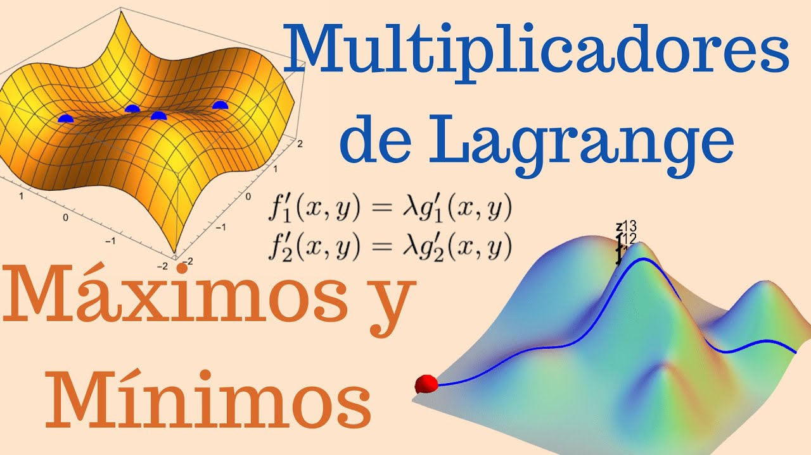

Joseph-Louis Lagrange nació el 25 de enero de 1736 en Turín, entonces parte del Reino de Cerdeña (actual Italia). Su nombre original era Giuseppe Lodovico Lagrangia, pero más tarde adoptó la forma francesa de su nombre cuando desarrolló su carrera en Francia. Fue hijo de Giuseppe Francesco Lodovico Lagrangia, tesorero militar. Aunque inicialmente no mostró un interés especial por las matemáticas, durante su juventud descubrió los trabajos de Newton y Halley, lo que despertó en él una gran pasión por esta ciencia.
Lagrange fue un matemático, físico y astrónomo que realizó contribuciones fundamentales al cálculo, la mecánica y el análisis matemático. A una edad muy joven comenzó a publicar trabajos importantes y mantuvo correspondencia con Leonhard Euler, quien reconoció su talento. Con el tiempo, Lagrange sucedió a Euler en la Academia de Ciencias de Berlín, donde produjo algunas de sus investigaciones más influyentes.
Su obra más famosa es Mécanique Analytique (1788), en la que reformuló toda la mecánica clásica utilizando métodos puramente analíticos, sin apoyarse en diagramas geométricos. En este trabajo introdujo el enfoque que hoy conocemos como mecánica lagrangiana, basada en el principio de mínima acción y en el uso de ecuaciones que simplifican el estudio del movimiento. Este enfoque sigue siendo fundamental en la física moderna.
También realizó aportaciones importantes en teoría de números, ecuaciones diferenciales, interpolación y cálculo de variaciones. El método de los multiplicadores de Lagrange, utilizado para encontrar máximos y mínimos con restricciones, es una herramienta esencial en matemáticas e ingeniería. Además, contribuyó al estudio del problema de los tres cuerpos en astronomía, identificando los llamados puntos de Lagrange.
Durante la Revolución Francesa permaneció en Francia y fue nombrado miembro del Instituto de Francia. Más tarde, Napoleón lo nombró conde y senador por sus contribuciones científicas.
Lagrange falleció el 10 de abril de 1813 en París, Francia. Hoy es considerado uno de los matemáticos más importantes del siglo XVIII y una figura central en el desarrollo del análisis matemático y la física teórica.